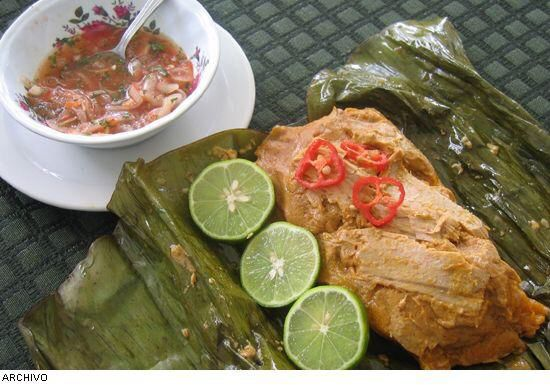
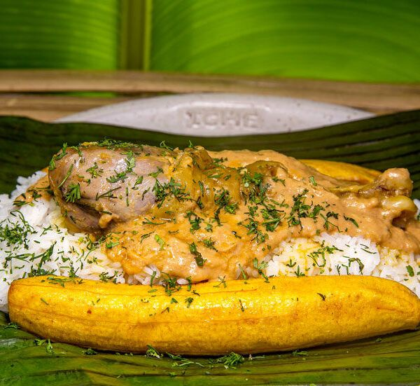
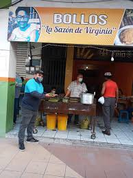

descubre el delicioso sabor y textura de el bollo de tilapia
$2.75
bolo de albacora con Camarón
Un toque refrescante con limones y a comer
$2.75

bollos de boca chico
un sabor unico y tradicional
$3.50
bollo de chancho
esta rellena de carne suave y jugosa
$2.75
bollo de mondogo
prueva su textura suave y deliciosa
$2.75

tonga
Una delicia ecuatoria que debes probar
$5.00
tortillas de maiz
tenemos de chicharon, queso y dulce
$1.75
Sobre Nosotros
Todo inició en los siglos 90 donde existe una persona llamada Aurelio y y empezaron un
local donde poco a poco fueron ganaron probabilidad pero después los municipales tuvieron
un problema y nos mandaron a la calle entonces solo existía el fogón donde tenían las
tortillas de ahí Aurelio ahí se le pegó a mi abuela Virginia Aurelio donde ellos sacaron
encima su negocio y mi abuela empezó a hacer los bollos Y ahora él yo empezó a hacer las
tortillas poco a poco fueron ganando fama y la demanda la necesitaba tener un local Entonces
ellos pusieron un bloque en la esquinita en la 7 de octubre en la principal y de ahí poco a
poco fueron en la popularidad de la final los votaron de ahí otra vez y está en un local más adentro

Contacto
Dirección: 7 de octubre, ciudad de Quevedo,los rios


.jpg)